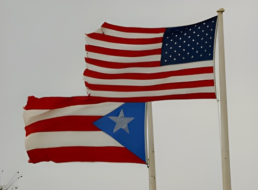

Territoire non incorporé des États-Unis depuis 1898, Porto Rico demeure l'une des dernières grandes « colonies » formelles du monde occidental. La question de son statut — longtemps gelée par des divisions internes et l'indifférence de Washington — est revenue au premier plan depuis 2020. Entre référendums sans suite, projet de loi historique au Congrès et retour de Donald Trump à la Maison-Blanche, l'île des Caraïbes est à un tournant.
Porto Rico occupe une position constitutionnelle unique et paradoxale. Depuis le Jones Act de 1917, ses habitants sont citoyens américains, mais ne votent pas pour les élections présidentielles et ne sont représentés au Congrès que par un délégué résident sans droit de vote. L'île est régie par le concept juridique de territorio no incorporado, issu des controverses Insular Cases de la Cour suprême (1901–1922) : Porto Rico « appartient » aux États-Unis mais n'en « fait pas partie ».
Ce statut hybride — officiellement appelé Estado Libre Asociado (Commonwealth) depuis 1952 — confère à l'île une autonomie interne limitée sur ses affaires courantes, tout en la laissant soumise à la pleine autorité du Congrès fédéral. Washington peut imposer ses lois fédérales à Porto Rico sans que l'île ait son mot à dire. Cette asymétrie est au cœur du débat sur le statut.
Le débat sur l'avenir institutionnel de Porto Rico se structure autour de trois grandes options. La première, la statehood — intégration comme 51e État —, est soutenue par le Parti Nouveau Progressiste (PNP) au pouvoir. Ses partisans arguent qu'elle seule garantirait la pleine égalité des droits et mettrait fin à une anomalie démocratique. La seconde est le maintien ou l'amélioration du Commonwealth, défendu par le Parti Populaire Démocratique (PPD), qui préfère une association libre négociée avec davantage d'autonomie. La troisième, l'indépendance, portée par le Partido Independentista Puertorriqueño (PIP) et la Victoría Ciudadana, reste minoritaire dans les sondages mais gagne en visibilité chez les jeunes et dans les milieux culturels.
Cinq référendums ont été organisés depuis 1967. Tous ont donné des résultats en faveur de la statehood — dont le dernier en 2020 (52,5 %) — mais aucun n'a de valeur contraignante pour le Congrès, qui reste seul maître de la décision.
Porto Rico cédé aux États-Unis par l'Espagne à l'issue de la guerre hispano-américaine (traité de Paris). Fin de 400 ans de colonisation espagnole.
Proclamation du Commonwealth (Estado Libre Asociado). Porto Rico adopte sa propre constitution mais reste sous souveraineté fédérale.
Le Congrès impose la loi PROMESA et crée la JUNTA DE SUPERVISIÓN FISCAL — une instance non élue chargée de superviser les finances de l'île, très impopulaire.
L'ouragan Maria dévaste l'île. Bilan : près de 3 000 morts, 90 milliards de dégâts. La gestion fédérale de la crise est sévèrement critiquée.
Référendum non contraignant : 52,5 % en faveur de la statehood. Résultat ignoré par le Congrès républicain.
La Chambre des représentants vote le Puerto Rico Status Act, première loi proposant un référendum contraignant avec trois options (statehood, indépendance, libre association). Le Sénat ne le soumet pas au vote.
Retour de Trump. Ses déclarations hostiles à la statehood (« Porto Rico est sale et ses habitants ne parlent qu'espagnol ») relancent le débat. Le gouverneur González-Colón, proche de Trump, tente de maintenir une ligne pragmatique.
L'argument économique est central dans le débat sur le statut. Porto Rico a connu en 2016 la plus grande faillite municipale de l'histoire des États-Unis, avec une dette de 73 milliards de dollars. La loi PROMESA, imposée par Washington sans consultation populaire, a établi la Financial Oversight and Management Board — surnommée la « Junta » par ses opposants en référence aux régimes militaires latino-américains — pour restructurer cette dette.
Les critiques sont virulentes : la Junta a imposé des coupes dans les retraites, les dépenses sociales et les budgets universitaires pour satisfaire les créanciers, principalement des fonds vautours basés à New York. Pour les défenseurs de l'indépendance, c'est la démonstration que Porto Rico n'est pas un partenaire des États-Unis mais une colonie économique.
| Indicateur | Porto Rico | État le plus pauvre (MS) |
|---|---|---|
| Taux de pauvreté | ~46 % | 19 % (Mississippi) |
| PIB/habitant | ~35 000 $ | ~46 000 $ (MS) |
| Dette publique | 73 Md$ (2016) | — |
| Émigration 2010–2020 | -14 % pop. | +0,2 % |
| Aide fédérale/hab. | Inférieure | Supérieure (Medicaid) |
Au-delà du calcul institutionnel, la question du statut est profondément identitaire. Porto Rico est un territoire hispanophone, culturellement caribéen, avec une identité distincte forgée sur 500 ans d'histoire. Pour une partie croissante de la population — notamment la diaspora de plus de 5 millions de personnes aux États-Unis continentaux —, l'intégration comme État supposerait une assimilation culturelle redoutée.
Les déclarations de Donald Trump durant la campagne de 2024 — qualifiant l'île d'« île d'ordures » lors d'un meeting — ont provoqué un séisme politique. Elles ont galvanisé la diaspora portoricaine en Floride et en Pennsylvanie, qui a massivement voté contre lui, et réactivé sur l'île un sentiment anti-Washington qui transcende les clivages partisans traditionnels.
« Somos una nación. Con o sin Estado. »
— Slogan du mouvement indépendantiste, 2024« We pay taxes, we fight in your wars, but we can't vote for your president. Explain that democracy to me. »
— Manifestant portoricain à Washington, janvier 2025Un siècle après le Jones Act, la question du statut de Porto Rico reste sans réponse. L'île est prise en étau entre ses propres divisions internes, l'indifférence chronique du Congrès et un contexte politique américain peu favorable aux avancées institutionnelles. Ce débat illustre une tension fondamentale au cœur du projet américain : comment une démocratie peut-elle gouverner, sans les représenter, des millions de citoyens ? Porto Rico n'est pas seulement une question de droit constitutionnel — c'est un miroir tendu à l'histoire coloniale des États-Unis, et un révélateur de ce que la citoyenneté signifie réellement au XXIe siècle.
Territorio no incorporado de los Estados Unidos desde 1898, Puerto Rico sigue siendo una de las últimas grandes colonias formales del mundo occidental. La cuestión de su estatus —largamente congelada por divisiones internas y la indiferencia de Washington— ha vuelto al primer plano desde 2020. Entre referéndums sin consecuencias, un proyecto de ley histórico en el Congreso y el regreso de Donald Trump a la Casa Blanca, la isla del Caribe está en un punto de inflexión.
Puerto Rico ocupa una posición constitucional única y paradójica. Desde el Jones Act de 1917, sus habitantes son ciudadanos estadounidenses, pero no votan en las elecciones presidenciales y solo están representados en el Congreso por un Comisionado Residente sin derecho a voto. La isla se rige por el concepto jurídico de territorio no incorporado, surgido de los controvertidos Insular Cases del Tribunal Supremo (1901–1922): Puerto Rico «pertenece» a los Estados Unidos, pero no «forma parte» de ellos.
Este estatus híbrido —oficialmente llamado Estado Libre Asociado desde 1952— otorga a la isla una autonomía interna limitada en sus asuntos cotidianos, mientras la deja sometida a la plena autoridad del Congreso federal. Washington puede imponer sus leyes federales a Puerto Rico sin que la isla tenga voz en ello. Esta asimetría está en el centro del debate sobre el estatus.
El debate sobre el futuro institucional de Puerto Rico se articula en torno a tres grandes opciones. La primera, la estadidad —integración como estado 51—, es apoyada por el Partido Nuevo Progresista (PNP) en el poder. Sus defensores argumentan que es la única que garantizaría la plena igualdad de derechos. La segunda es el mantenimiento o mejora del Commonwealth, defendida por el Partido Popular Democrático (PPD). La tercera, la independencia, llevada por el PIP y la Victoria Ciudadana, sigue siendo minoritaria en las encuestas pero gana visibilidad entre los jóvenes.
Cinco referéndums han tenido lugar desde 1967. Todos han dado resultados a favor de la estadidad —incluido el último en 2020 (52,5 %)— pero ninguno tiene carácter vinculante para el Congreso.
Puerto Rico cedido a EE. UU. por España tras la guerra hispanounidense. Fin de 400 años de colonización española.
Proclamación del Estado Libre Asociado. Puerto Rico adopta su propia constitución pero sigue bajo soberanía federal.
El Congreso impone la ley PROMESA y crea la Junta de Supervisión Fiscal, muy impopular en la isla.
El huracán María devasta la isla: ~3 000 muertos, 90 000 millones en daños. La gestión federal es duramente criticada.
Referéndum no vinculante: 52,5 % a favor de la estadidad. El resultado es ignorado por el Congreso republicano.
La Cámara vota el Puerto Rico Status Act, primera ley que propone un referéndum vinculante. El Senado no lo somete a votación.
Regreso de Trump. Sus declaraciones hostiles a la estadidad relancen el debate. La gobernadora González-Colón mantiene una línea pragmática.
El argumento económico es central en el debate sobre el estatus. Puerto Rico vivió en 2016 la mayor quiebra municipal de la historia de los Estados Unidos, con una deuda de 73 000 millones de dólares. La ley PROMESA, impuesta por Washington sin consulta popular, estableció la Financial Oversight and Management Board —apodada la «Junta» por sus opositores— para reestructurar esa deuda.
Las críticas son contundentes: la Junta impuso recortes en pensiones, gastos sociales y presupuestos universitarios para satisfacer a los acreedores, principalmente fondos buitre con sede en Nueva York. Para los defensores de la independencia, es la demostración de que Puerto Rico no es un socio de los Estados Unidos, sino una colonia económica.
| Indicador | Puerto Rico | Estado más pobre (MS) |
|---|---|---|
| Tasa de pobreza | ~46 % | 19 % (Mississippi) |
| PIB/habitante | ~35 000 $ | ~46 000 $ (MS) |
| Deuda pública | 73 000 M$ (2016) | — |
| Emigración 2010–2020 | -14 % pob. | +0,2 % |
| Ayuda federal/hab. | Inferior | Superior (Medicaid) |
Más allá del cálculo institucional, la cuestión del estatus es profundamente identitaria. Puerto Rico es un territorio hispanohablante, culturalmente caribeño, con una identidad propia forjada en 500 años de historia. Para una parte creciente de la población —en especial la diáspora de más de 5 millones de personas en el continente—, la integración como estado implicaría una asimilación cultural temida.
Las declaraciones de Donald Trump durante la campaña de 2024 —llamando a la isla una «isla de basura» en un mitin— provocaron un seísmo político. Galvanizaron a la diáspora puertorriqueña en Florida y Pensilvania, y reactivaron en la isla un sentimiento antiWashington que trasciende las divisiones partidistas.
« Somos una nación. Con o sin Estado. »
— Lema del movimiento independentista, 2024« We pay taxes, we fight in your wars, but we can't vote for your president. Explain that democracy to me. »
— Manifestante puertorriqueño en Washington, enero de 2025Un siglo después del Jones Act, la cuestión del estatus de Puerto Rico sigue sin respuesta. La isla está atrapada entre sus propias divisiones internas, la indiferencia crónica del Congreso y un contexto político estadounidense poco favorable. Este debate ilustra una tensión fundamental en el corazón del proyecto americano: ¿cómo puede una democracia gobernar, sin representarlos, a millones de ciudadanos? Puerto Rico no es solo una cuestión de derecho constitucional —es un espejo tendido a la historia colonial de los Estados Unidos, y un revelador de lo que significa la ciudadanía en el siglo XXI.